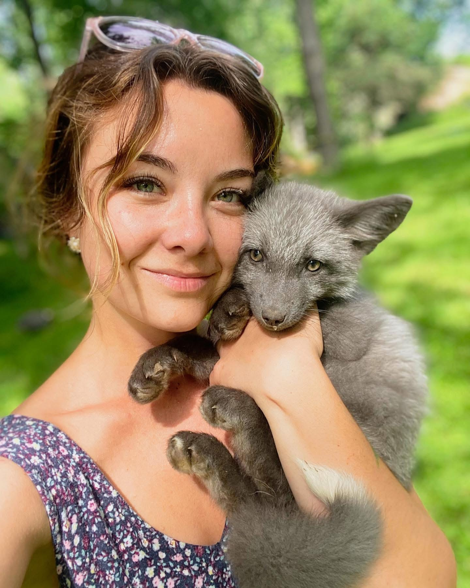
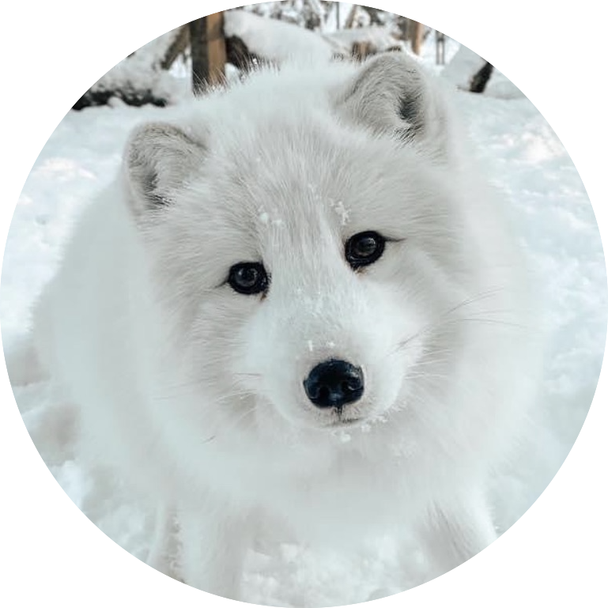
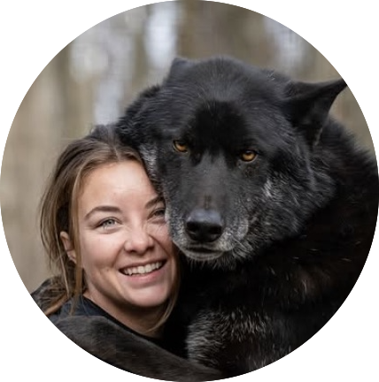
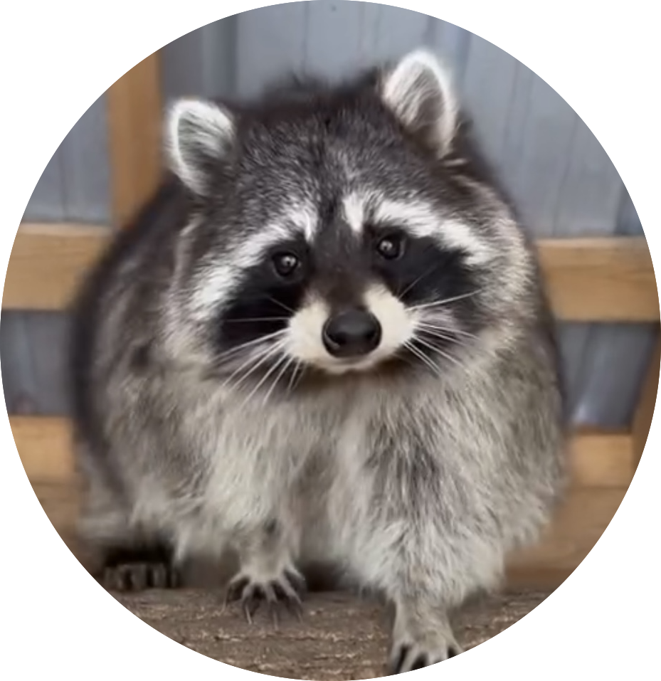
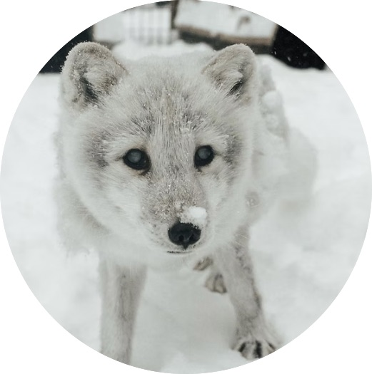
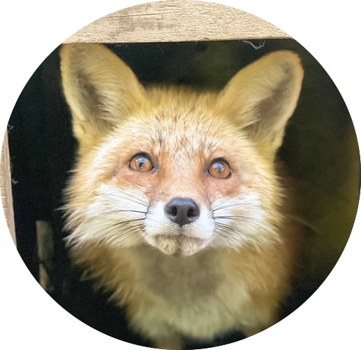
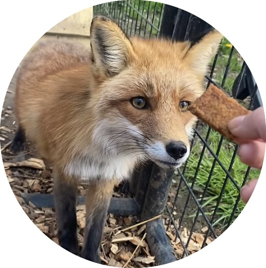

ABOUT US
The Organization
Arctic Fox Daily is a 501(c)(3) nonprofit animal rescue in Upstate New York, providing a forever sanctuary for captive-bred, neglected, abandoned, and non-releasable wildlife, with a focus on foxes and wolfdogs. We also rescue, raise, and release orphaned, New York-native wildlife, aiming to return them to nature whenever possible. Our organization is funded entirely through donations, grants, and contributions from our team, with no government funding. We greatly appreciate any support you can provide! Since September 2020, we’ve been a recognized 501(c)(3), allowing tax-deductible donations. Learn more on our Contribute page.
A Message from Our Founder

"Hi everyone, my name's Kimberly. My family and I live in Upstate New York, which is where I run my home-based wildlife rescue. I've been volunteering my time working with and raising rescued wildlife and exotic pets since 2012. I possess both federal USDA and NYS DEC licenses, which allow me to legally work with these animals. In 2020, my rescue efforts had grown enough that I decided to leap and create a nonprofit. That's when Arctic Fox Daily Wildlife Rescue Inc. was born. All of our non-releasable permanent residents were either born in captivity, not taken from the wild, or have a permanent disability that would prevent them from surviving and thriving in the wild. We love sharing a look into the behaviors and lives of these beautiful animals, enjoy helping people learn about the realities of exotic pet ownership (foxes really don't make good pets), and enjoy furthering conservation efforts through education. Rescuing these animals is time-consuming, many times heartbreaking, but most of all - it's incredibly rewarding! The feeling associated with A) being able to provide forever sanctuary to an animal who'd otherwise have been euthanized and B) opening up an enclosure door and allowing a rehabilitated animal to take its place back in nature is so unique and special."
Frequently Asked Questions
Do Foxes Make Good Pets?
Most foxes are not suited to life indoors and require constant supervision. They need an outdoor enclosure, cannot be fully potty-trained, and mark things they like. Foxes are not like dogs—they can’t be disciplined the same way, are quick to lose trust, and take rehoming very hard. They also go through seasonal hormonal changes, may need special permits, and typically dislike physical affection once they mature. They have a strong, natural odor and require a caretaker who understands their physical and mental needs. Caring for a fox demands a significant time investment, with their well-being being all-consuming.Many pet fox owners will tell you that your life will revolve around your fox, not the other way around. This lifestyle can last for over 10 years. The growing popularity of foxes as pets is driven by the false belief that they’re like dogs. While they share some traits as canines, foxes are very different. They listen only when they want to, are affectionate on their terms, and act instinctively in ways that dogs typically don’t (like food aggression or fear-based aggression). Foxes are wild animals, and in the U.S., they are not truly domesticated. Most foxes bred for the pet industry come from fur farms and are not bred for domestication. The only true “domestic foxes” come from a breeding program in Russia.
Click HERE to watch this reccomended YouTube video about why foxes are not good pets.
Are Permanent Residents Pets?
While we do share updates about both wildlife rehabilitation intakes and the non-releasable, captive-bred foxes who are permanent residents at our sanctuary, they are not pets. Our residents are part of our family, and we take great pride in forming bonds with each one. However, they require a different level of care and respect than typical pets (like cats or dogs), as well as additional legal considerations. These foxes are accustomed to human contact and will remain in captivity for life, as releasing them would be both illegal and unethical. Our focus is to make their lives as comfortable as possible while they remain under human care. On the other hand, the orphaned Red Fox kits we take in for wildlife rehabilitation are raised with the goal of releasing them back into the wild. For this reason, we limit and minimize human interaction with them to ensure they maintain a healthy fear of humans before their release. These rehabilitation animals are treated differently from our permanent residents, as our priority for them is to prepare them for life in the wild.
Click HERE our current permanent residents!
What Do Foxes Eat?
In the wild, foxes are omnivores. Often refered to as "opportunistic carnivores", they are primarily meat-eaters, but they will take the opportunity to eat whatever they can get. They catch small prey, and sometimes eat carcasses left behind by larger predators. They'll also eat insects, eggs, fruits, vegetables, nuts, etc. that they find along the way. A fox's diet will vary depending on geographic location. Many Arctic Foxes, for example, will eat a large number of lemmings (a type of rodent). Years that lemming numbers are low, though, they may eat more eggs, fruits, berries, carrion, etc.
Click HERE to learn more about foxes!
I'm Worried A Fox Will Attack My Kids, Cats, & Small Dogs.
It is extremely rare for a fox to view your infant, cat, or small dog as prey. In all our years as rehabbers, we’ve never witnessed such a case. Healthy foxes generally want to avoid humans; they’ll only "attack" as a last resort, such as if they feel cornered, perceive a threat to their kits, or are provoked. Even then, many parent foxes will choose to flee rather than fight. If you see a fox denning near your home, such as by a shed in your backyard, simply enjoy watching the family grow from a respectful distance. As long as you don't pose a threat to them, they won't bother you. They’ll serve as excellent natural rodent control during their time there! In the spring, if a fox chases your dog or cat, it’s most likely because it has a den nearby and is trying to protect its young, not because it views the pet as prey. Though the chase can appear aggressive and injuries may occur, the fox is likely just trying to defend its family. Foxes generally don't see cats or dogs as prey since they recognize them as predator-type animals too, and they don’t typically expend energy on prey larger than 2 lbs. For safety, always ensure your children maintain a respectful distance from wildlife, and keep small pets indoors when unsupervised. There are far more dangerous airborne (hawks, eagles, owls) and land predators than foxes to worry about.
Click HERE for New York animal control resources!
Can't you just live-trap & relocate the fox I'm worried about?
No, not really. Trapping and relocating foxes really isn't an ideal option, because 1) if they have a den, you'd be orphaning any kits that may be left behind, as it's extremely difficult to relocate an entire family, foxes tend to be monogamous for life, and 2) foxes are territorial creatures, so the minute you remove one from what they consider good territory, another one is just going to move in. Additionally, there are often laws and regulations regarding trapping wildlife. We are not licensed trappers.
How Can I Treat a Fox Suffering From Sarcoptic Mange?
Mange is absolutely treatable! We have been using a different protocol for mange treatment at our rescue the last year, and are working on updating this part of our website for you. for now please use your local wildlife resources.
How do I become a Wildlife Rehabilitator?
Wildlife Rehabilitators are licensed by their state to legally be able to care for orphaned or injured wildlife, with the ultimate goal always being release back into the wil You can find out how to become a wildlife rehabber by visiting your state's wildlife conservation agency's website, or giving them a call. Each state may have different requirements to become licensed.
-
Here are a some of the main requirements in New York:
- You must be at least 16 years old
- You must pass a test offered by the New York State Department of Environmental Conservation
- You must have an exit interview with a special licenses officer at your facility
- You must send in annual reports regarding your year's wildlife intakes
The steps to becoming a Licensed Wildlife Rehabilitator are fairly simple. We always need more volunteer rehabbers, so if you are interested in the work and want to help, please do your research and reach out to us!
For more information on how to become a wildlife rehabber in New York State, click here.
Our Current Residents
We have several new residents whose bios aren't on our website yet - be sure to check social media for the most up-to-date content!
Toto: Captive-born Arctic Fox - The Catalyst of Arctic Fox Daily
Toto may no longer be with us, but his story remains at the heart of everything we do. In 2012, at just 18 years old and early in my wildlife rehab journey, I rescued Toto from a difficult situation. He was the first—and only—fox I ever purchased, not as a pet, but because I knew he needed help. Caring for him was a steep learning curve, but it sparked a deep commitment to understanding and protecting this incredible species. Though he was mostly hands-off, Toto and I shared a quiet, profound bond. His presence led to more rescue calls, more foxes, and ultimately, the founding of Arctic Fox Daily Wildlife Rescue, Inc. He was the beginning of it all, and I will always be grateful for the path he set in motion. Rest in Paradise, Toto: 2012-2022

Dakota & Tikita: Captive-born Wolf Dogs
Tikita and Dakota came to us after being confiscated by New York’s Department of Environmental Conservation due to their previous owner lacking the proper license to own what the state classifies as “Dangerous Animals.” While we were informed it may have been a hoarding case, we can’t confirm those details. Our focus is never on judgment, but on gratitude that we can now provide them with a safe, lifelong home. Wolfdogs, or wolf hybrids, often require special permits in many states and are surrounded by controversy—some view them as high-maintenance dogs, others as wild animals. The truth lies somewhere in between. These animals, though born in captivity, require highly experienced, intuitive handlers and secure enclosures. Standard fencing won’t do; they can climb, dig, and escape with ease. While wolfdogs can form strong bonds with trusted humans, they are not guard dogs and are often difficult to read—more complex than domestic dogs or pure wolves. Because so many are surrendered or euthanized due to unmet expectations, we strongly discourage anyone without advanced experience and proper containment capabilities from acquiring one. These animals deserve committed, prepared caretakers and a stable environment.

Savvy & Mo: Illegal pet surrender- Racoons
Copy adapted and quoted from from instagram reel Jan 31 2025
When Savvy came to the wildlife rescue she weighed over 32 pounds that’s double what she should have weighed under normal circumstances.
Before savvy and Mo were surrendered to the state, they were kept as illegal pets for over four years.
By the time they arrived to the sanitary, they were no longer candidates for release back into the wild.
Their new life at the the rescue meant that we had to reinforce a more balanced diet and better exercise.
During their time here at Arctic Fox Rescue we sadly lost Mo due to complications from his obesity. MeaningSavvy had to continue on her weight loss journey on her own.
She’s currently a healthy and happy raccoon living at our rescue. Even though she’s thriving on her own present day we still keep an eye out on the rescue community for potential new friends!

Archie: Captive-born Arctic Fox
Archie’s most important trait: He’s completely blind.
Archie joined us in October 2020 after being dropped off at a Colorado rescue. We learned he was born blind and was around eight years old at the time (born in 2012). Afterward, he went to a fox rescue in Minnesota, Save a Fox, where he was very withdrawn due to the major life changes. Eventually, we decided to bring him into our care since Save a Fox didn't have other Arctic foxes and we had space.
We set up a small section in Toto and Lulu's enclosure for Archie to settle in and safely meet them through a barrier. Once they got along, we let Archie roam freely, though he still has a safe spot to retreat to.
Now, Archie is thriving! He’s the first to greet us with a wagging tail, looking for a treat. Lulu has a big crush on him, and despite their constant bickering, they’re inseparable. Toto just shakes his head at their antics. Together, they make the sweetest and funniest Arctic fox trio!

Kaya: Non-releasable Wild-born Red Fox
Kaya, our beautiful Red fox, is one of the most elusive residents here.
She arrived as a wildlife rehabilitation intake, with the goal of releasing her back into the wild. However, due to her unusual calmness around humans, a vet determined she couldn’t be safely released. She lacked the fear of humans necessary for survival.
After learning from our experience with another fox, Floyd, I had Kaya tested for toxoplasmosis. We discovered that she had been infected and had overcome it at some point. It’s unclear if her calm demeanor is due to being habituated to humans—perhaps by someone trying to keep her as a pet—or if the brain damage from the toxoplasmosis infection affected her natural survival instincts.
Despite her quirks, such as disliking raw meat or treats, Kaya doesn’t enjoy human interaction. She usually hides in her house when I’m near and doesn’t seek attention. While I’m sure Kaya would thrive in the wild, we know she wouldn’t survive on her own. So, a safe life here at our sanctuary is the best option for her.

Mori: Non-releasable Wild-born Red Fox
Mori was an exhibit animal at a zoo, and due to his timid temperament, it was too stressful of an environment for him. He is going to do much better in a sanctuary environment like ours, where exposure to the public is extremely limited. We are unsure why Mori was originally deemed non-releasable. We assume that, as a kit, somebody may have thought he was "too friendly" to be released. Now that enough time has passed with Mori being in captivity - although he is shy - he is definitely too habituated to be able to be a candidate for release, and will live out his days in a sanctuary environment.